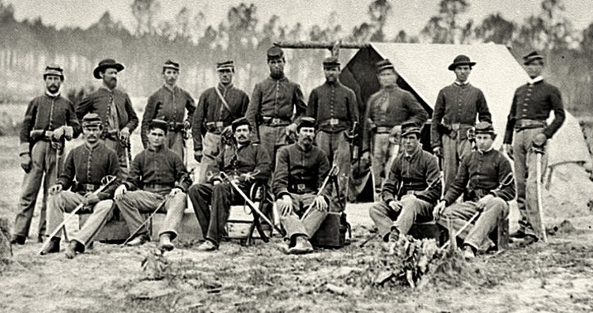
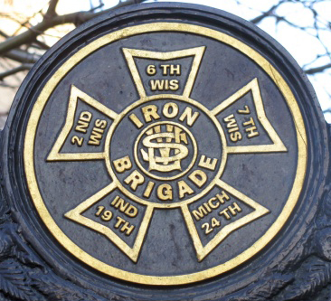
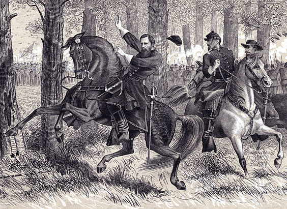
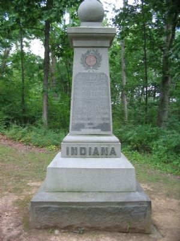

|
It is often hard to imagine why men volunteered to lay their
lives on the line. Why would a bunch of Indiana country
boys want to march through hundred degree heat, live on
limited rations of weevil invested hardtack, and still risk
losing their lives to Johnny Rebs they had never ever set
eyes on before? Why did the soldiers of the Indiana
nineteenth put up with all these problems? Why did they
fight? Why didn't they just go home? Certainly, there's no
one right answer to any of these questions. But, the
predominant motive to stay and fight amongst the soldiers
was the maintenance of the national government. The South
was in rebellion against the old flat, out forefathers. They
were in rebellion against a national government that had
been established almost one hundred years ago; established
to unify one great nation of peace loving people. The
nineteenth Indiana men enlisted to put down this
rebellion.
The nineteenth Indiana regiment participated in some of the
most famous battles in the civil war including Antietam,
Fredricksburg, and Gettysburg. They would go down in
history as being one of the five regiments who made up the
famed Iron Brigade. Notoriety, and popularity however,
didn't resonate with the Indiana nineteenth from the
beginning.
In the beginning of summer 1861 the nineteenth Indiana
volunteers began to form a regiment. Most of the companies
that made up the regiment came from the middle portion of
Indiana. Counties such as Selma, Edinburgh, Anderson and

The flag of Company E of the 19th Indiana Infantry
|
Muncie sent their boys to the train depots that would send
them off to an unfamiliar land. Most of these who filled
the ranks were boys, the median age being about twenty. In
some cases young boys of sixteen, seventeen, and even
fifteen year old Henry Zook made their way into companies.
And let it not be forgotten, there were the old as well. In
company B the nineteenth, Benjamin Thornburg was forty and
James Bradbury was forty-two.
The majority of men in the nineteenth regiment were American
born Indiana natives. However, there were a lot of men of
southern origin who migrated to Indiana in the early and
middle part of the nineteenth century. Many of the men were
of German and Irish ancestry, with a few Scandinavians. A
man of Irish ancestry, Soloman Meredith was appointed
colonel of the nineteenth Indiana in July of 1861. Born
1810, in North Carolina, Meredith migrated to Indiana in
1829. He worked as a laborer to pay for his private
education, won election to two terms as sheriff of Wayne
County, and four terms in the state legislature, and in 1849
was made US Marshall of Indiana. He was appointed colonel
of the nineteenth Indiana by Governor Oliver Morton in 1861.
Interestingly, Meredith's support of the Republican ticket
resulted in his selection as a member of the Republican
National Committee. During the party's national convention
in 1860, solid support of the Indiana delegation, under the
leadership of Henry Lane, assured the nomination of Abraham
Lincoln. After the election of 1860 Meredith kept in touch
with Lincoln by providing letters of introduction for
prominent Wayne County Republicans and on at least on
occasion by visiting the president elect in Springfield,
Illinois. Meredith's support of friends in high public
positions often made him the subject of ridicule by the
press. His support of Lincoln and Governor Morton gave the
press the opportunity to degrade his military ambitions as,
"brazen impudence and sublime effontery," and labeled his
appointment as colonel a damnable swindle. And, it was said
that the nineteenth Indiana was Governor Morton's pet
regiment because the governor like colonel Meredith was from
Wayne County and because Company B of the nineteenth was
composed of Wayne County men. The colonel survived these
outcries, though, and was eventually a strong enough
commander to be named as Brigadier General of the US
volunteers in 1862.
One of the colonel's first orders of duty was to drill his
men. Men were first supposed to learn by example.
Instructors read an explanation of a movement, then executed
the movement, and then put the men through endless
repetitions of drills. Soldiers were taught how fast, and
what order was necessary to march together as fighting unit.
The men were also given a manual to read about how to load
and fire their muskets. They were drilled on how to
properly carry and use their bayonets. Usually companies
were broken up into smaller units to learn the correct
aspects of soldiering. They were then united into a large
squad, then a company, and eventually a regiment. William
R. Moore, a private in the Selma Legion, remembered those
first days spent in trying to master the intricacies of
infantry drills: "Our life in camp Morton was not exactly a
picnic, even if on that order to some extent. It was quite
warm (hot) weather, as is apt to be at the time of year. We
were being drilled vigorously in military maneuvers learning
how to march in twos, fours, squads, platoons and co. in
line learning "hay-foot, straw-foot, "marching,
counter-marching, quick time, and double quick, etc." If
drilling of this kind wasn't enough, officers, often to the
dismay of solders, went by the book. The book usually
didn't allow the soldiers any short cuts, or leeway from
drilling the soldiers, and gave the order: "right or left
oblieu-March! "The soldiers of course didn't comprehend the
order, and so informed him, and someone told him, it was
wrong, to which he replied, "that couldn't be, for he had
taken it from the book." Obviously, the book didn't always
make communication between commanders and soldiers
agreeable. Many officers, after enough experience read and
studied the manual and pretty much forgot about it. In other
words, they relied more on common sense and street tactics
after they gained enough experience.
Drilling in the summer and winter months was also made very
difficult because of the lack of adequate apparel. Often
times in the hot, sultry heat of June, July, and August,
soldiers had to drill and fight in heavy woolen uniforms,
thick socks, and heavy flannel shirts. As one might
imagine, wearing these articles of clothing many soldiers
suffered from heat exhaustion and dehydration before even
reaching the battlefield. Conversely, in the frigid months
of December, January, and February, soldiers often lacked
leggings, overcoats and shoes. Even more miserable, during
long winter marches through the snow soldiers often trampled
through creeks and frozen over rivers (sometimes falling
through the ice) getting just about every part of their boy
wet. Even though soldiers were usually issued two or three
different types of blankets, they often wouldn't do because
they got soaked or had to left behind because of gruesome
travel. Furthermore, once part of your uniforms were wet,
soldiers didn't have anywhere to go for shelter besides
their tents. And when on the march, it's tough to set up a
tent. So as consequence, many soldiers pretty much froze to
death because they had wet cloths that couldn't be changed.
As a result, many soldiers who didn't die from extreme
conditions became sick with diarrhea or malaria.
Actually the nineteenth Indiana arrived in Washington in
August of 61 to join the Wisconsin regiments, and got sick
even before entering battle. There was widespread sickness
in the regiment as the Hoosters sought to make the
adjustment of army food and sanitary facilities. As many as
forty percent of the men in the command were effected and it
was believed by doctors and officers that the springs used
by the nineteenth for drinking water had been poisoned.
Tests proved that the drinking water wasn't contaminated,
nevertheless, the regiment's sickness continued until
September. Even though this was an isolated incident,
sicknesses and calamities occurred periodically throughout
the war. For the most part, disease, throughout the army
were due to bad cooking, bad police, bad ventilation of
tents, and inattention to personal cleanliness. Later in
the war however, anther disease would become a major
problem. Chronic diarrhea hampered many men, and became
quite a challenge to medical personal. Christopher Starbuck
of the Indiana regiment explained the diarrhea problem in
his company: "I am well all except the bowel complaint.
There is more than one half of the regiment got it. It
appears to be the prevailing disease at he present."
Treatments for diarrhea were usually pretty limited.
Quinine, morphene, and a real good rinsing were remedies
usually prescribed by doctors. Certainly, not all soldiers
were cured with these remedies, however, many did take the
advise from medical personnel and benefited.
Whatever problems soldiers ran into i.e.. sickness, disease,
uniforms, food, drills, etc. They had to keep on pushing
forward. They were motivated by a fervor of
anti-confederacy. The rebel yell, rebel hatred, and the
rebels trying to divide a country unified the Nineteenth
against the south. Many confederates even claimed that they
were fighting a holy war. Jefferson Davis frequently
declared national days of prayer and fasting to invoke God's
favor on the battlefield. This day certainly was used as a
propaganda tool for discouraged confederates. If they
didn't do their duty, then they wouldn't be delivered to
God. The nineteenth regiment also could use Jefferson Davis
self proclaimed Prayer and Fasting Day as a propaganda tool.
To learn of such a day, the Hoosters became fired up even
more. Their hatred for their southern foes grew only more.
Occasionally Abraham Lincoln designated a day for similar
purposed for the North, but his proclamations could only
match those of southerners if regiments took it into their
own hands to utilize such beliefs. The Indiana nineteenth
certainly did take hold of Lincoln's proclamations. Instead
of celebrating through Prayer, though, they used
motivational material for the field of battle.
Now that the nineteenth Indiana was motivated and willing to
fight, all they needed was a battle. They got just about
all they bargained for at the end of summer, 1862. On
September 17th, the Indiana volunteers participated in the
|

Members of the 19th Indiana Infantry in 1862
|
single bloodiest day in the civil war. In Sharpsburg,
Maryland, the battle of Antietam began at dawn on the 17th
and didn't end until forty-seven hundred men lay dead,
eighteen thousand wounded and another three thousand were
missing twelve hours later.
Antietam began ominously for the nineteenth when they
learned that their leaders, colonel Meredith wouldn't lead
them across Antietam creek on the seventeenth. A would, a
couple cracked ribs, and fatigue from the marches leading up
to Antietam put Solomon Meredith on the shelf. The command
now fell upon Lieutenant colonel Bachman. Bachman, a former
recipient of a chest would at Laurel Hill while leading his
men in Virginia as a captain was now thrown into duty.
Early on the morning of the seventeenth, the Indiana
volunteers were called up and prepared to go into action.
They were moved to the front line along with their other
Iron Brigade mates. The nineteenth men moved to the edge of
a cornfield and skirmished with some confederates until
Gibbon ordered them to meet the enemy in the west woods. As
they made their way to the west woods they were ordered to
hold their ground on the far right while the second, sixth,
and seventh Wisconsin regiments accompanied them immediately
to their left. After moving to the extreme right along the
edge of the woods, they opened fire on the rebels causing
enough damage to make the enemy fall back in disorder. It
was at this point that Colonel Bachman, most definitely
persuaded by this men, gave the order to charge. With hat
and sword I hand, Bachman gave the order to double quick and
his Indiana men sprang forward with a cheer into a spirited
bayonet charge. The regiment quickly charged across the
pike and followed the retreating rebels to the brow of a
hill, where they had a strong reserve of infantry and
artillery. A soldier described the climax of this charge.
As the regiment gained the top of the hill they were greeted
by a terrible volley of musketry from a full brigade of
rebel infantry. For a moment the line staggered. The
clarion voice of Bachman was heard urging his men to hold
the hill until reinforcements would come up. The men
rallying to his call began to fire into the dense mass of
rebels in front for the five minutes they held the hill. In
those five minutes, one-third of the line had fallen. Still
Bachman cheered on his men. A rebel bullet struck him, and
he fell to rise no more.
It was at this point that captain Dadley took command and
saw that he had to fall back. After a disastrous charge,
the nineteenth along with the Iron Brigade withdrew into the
woods near the miller farm. Bachman's charge had cost the
regiment over one hundred casualties of two hundred
involved. Of the eight hundred officers and men who marched
out that morning in the Iron Brigade, three-hundred and
forty-three were killed and wounded. After an absolutely
gruesome day, both armies were beaten, especially Lee's. The
next morning instead of attacking, McClellan let Lee's
battered army escape across the Potomac, and Antietam was
over.
After Antietam, so many officers and enlisted men had been
lost that the nineteenth Indiana almost disappeared. Bachman
was dead, Meredith was injured, and the number of men in the
regiment had diminished by almost half. The men of the
nineteenth and participated in the bloodiest day in civil
war history. They had much to be proud about. They were
more than ever recognized as a member of the famous Iron
Brigade. However, the war was far from over. With
campaigns such as Fredericksburg and Gettysburg yet to come,
these Hoosiers had a lot of work to do.
The next two months would present tremendous changes for the
nineteenth regiment. Changes were necessary because of the
events of the last few weeks. On September 26th, and
officer from the Third Indiana cavalry described how he had
ridden over to see friends in the western brigade. Three
|

The Iron Brigade was one of the most
famous and respected units to fight in the Civil War.
|
days ago I visited Gibbon's brigade and was surprised at its
appearance. The brigade now musters but four hundred
effective men, and the nineteenth less than one hundred.
Their loss in commissioned officers has been heavy, three
companies at this time being commanded by corporals. The
destruction that Antietam had wrought on the Indiana
nineteenth left them in no condition to begin or maintain
active operations. With numerous officers and men lost to
battle, they were about to lose another key figure. Colonel
Meredith left for Washington in late September as the
headman of the nineteenth, and came back as Brigadier
General of the US Volunteers. Despite a few grumblings
about Long Sol's appointment (especially from John Gibbon),
his promotion meant that the nineteenth was left without its
main man. Meredith was now gone. Lieutenant Colonel
Bachman and Major May had been killed. Three captains Luther
Wilson, John Lindley, and Patrick Hart, and eight
lieutenants had been wounded. Captain Samuel William's was
promoted to lieutenant colonel and captain Dudley became the
new major.
Despite their losses, Indiana soldiers were proud of their
record and the reputation they had earned over the last
year. Jesse Potts explained that the few surviving Richmond
city greys had all conducted themselves honorably. You may
assume the Richmond folks that the reputation of the city is
safe in the hands of Major Dudley and the few remaining
greys. Our flag will be returned without any stains of
dishonor. It was carried triumphantly through the battles
of South Mountain and Antietam, and carries honorable marks.
We look on it with pride and pleasant recollections of the
occasion of its presentation.
Yes, the nineteenth had represented itself with pride and
honor, but one crucial fact reminded: the nineteenth
desperately needed more men to resume operations. General
McClellan certainly recognized this fact, and endorsed a
letter to Indiana Governor Morton calling for more Indiana
men. I have watched this regiment with its Wisconsin
comrades, under the hottest fighting in the most dangerous
pository, and I am glad to say that there is no better
regiment in this or any other army. I ask of you as an
official and personal favor that you will take the most
prompt means to fill the ranks of the noble regiment.
Despite this glowing compliment from McClellan, only a
handful of volunteers signed up. With a lack of volunteers
signing up, the nineteenth had to look elsewhere for more
men. At the beginning of October, they finally received a
little good luck. Captain Alonzo make peace enlarged the
Hooster ranks with fifty men from Alexandria. These men
consisted of older ex-prisoners, convalescents, and a few
new recruits. In addition, as many as eighty more men
returned from hospitals or from detached service to rejoin
the Iron Brigade. About ten of these men returned to the
nineteenth, making them fifty percent stronger than they
were just a couple of weeks earlier.
The strength and morale of the men shot up even more when
they learned in mid-October that the Quartermaster
Department began to issue paraphernalia, and other desirable
army items. New uniforms, shoes, trousers, socks, and
shirts were issued. Other valuable items such as canteens
and tents were also issued. However, probably the most
treasured of all the items issued were black hats. The
black hats, unique to the Iron Brigade identified them as
the best fighting men in the war. Soldiers quickly embraced
their new designation. Major Rufus Dawes boasted that his
men had stood like iron. Lieutenant Frank Haskell bragged,
I am three fourths iron and the rest is oak. With black
hats, paraphernalia additional men to fill out the ranks,
the nineteenth had undergone a major transformation.
Antietam left the nineteenth with practically nothing. Two
months later, however, the nineteenth was reinforced and
ready for action.
It wasn't until over half a year later that the nineteenth
would be engaged in a full-scale battle again. Lieutenant
Colonel Dudley, and Major John Lindley would be severely
tested at the famous battle of Gettysburg. In fact, the
nineteenth regiment and all of the Iron Brigade would be
tested like no other battle before. With replenished
strength and a small scale part in the battle of
Fredricksburg, the nineteenth regiment was ready to march to
Gettysburg, Pennsylvania.
The long march north for the nineteenth began months before
Gettysburg. In late April, early May, the nineteenth along
with the Iron Brigade marched along the river parallel to
the battle being fought at Chancellorsville. Although, not
engaged in the battle, the Iron Brigade and the nineteenth
were recognized. They were often cheered with great
approval by other regiments familiar with their reputation.
Once such incident occurred on a return march, when Berdan's
Sharpshooters, carrying a distinguished reputation of their
own, shouted boisterous approval of these giants with their
tall black hats. In one sharpshooters opinion, they were
the finest representation of the model American volunteer.
Marching on through battle sites such as Chancellorsville
certainly gave the nineteenth regiment an opportunity to be
showcased amongst the rest of the army, but how did the
|

Maj. Gen. John Reynolds was overseeing
the movements of the Iron Brigade when he was killed
on the first day of the Battle of Gettysburg.
|
nineteenth stay focused on their task at hand? With all the
men who had been lost in battles that had given them
recognition, fame, and glory, the nineteenth kept on
plugging along. Certainly the hatred for rebels, the
division of country, and pure bravery motivated the Hoosier
men. But they need more than just motivation to fight. At
time they needed to escape from reality. They needed to
ease the tensions that war had brought.
One way many men accomplished this was through drinking.
Drinking provided as escape from a variety of reasons. One
Hoosier thought drinking gave them a false sense of courage:
to many men who wish to be called brave invariably fortify
themselves before going into battle by partaking freely of
the vile liquor that is sold; and their insane rashness is
mistaken for bravery and heroism. Abuse of alcohol did give
some a false sense of courage, and made it easier to fight
and do their duty. Many officers were addicted to alcohol
for similar reasons. As much as alcohol loosened many of
the men up, it also damaged camp life, and ultimately the
careers of some men. Alcohol played a major role in ending
the military career of Lieutenant Benjamin F. Hancock. On
May 29th Hancock grossly intoxicated stumbled into company D
and tried to pick a fight with Abram Oliver, a noted
brawler. Oliver refused to fight but after Hancock took off
his coast and came back to company D's camp after leaving
two times, Oliver finally lost patience with the drunken
officer and punched him. Lieutenant Hancock was
court-martialed on June 5th for conduct, prejudicial to good
order and military discipline and conduct unbecoming an
officer and a gentlemen. The court found Hancock guilty of
both charges and sentenced him to be dismissed from the U.S.
service. Alcohol abuse helped many escape reality at times,
but also hindered, and in a few cases ended careers. Even
though alcohol did hurt a number of soldiers, it also helped
quite a few. Alcohol was a vehicle used by many to dampen
the realities of war.
The last few marching days to Gettysburg were dusty and hot.
Water was so scarce that men of the nineteenth usually
collected water from mud puddles. By the time June 25th
rolled around, men were so tired from marching that they
could hardly even eat. Many men went without food and very
little water for days. However, as the nineteenth Indiana
got closer and closer to Gettysburg, thing began to look up.
The last two days before the battle, the men were welcomed
by the small towns in Pennsylvania's countryside. There
were several flags waved at them by the young ladies,
everybody was glad to see them, even the days looked like
they were glad to see them come. Most important, though,
they rejoiced at being able to buy much needed foods and
beverages for cheap prices. One soldier expounded on what
he received for his money. I get good milk for five cents
and a canteen full; butter twenty-five cents per pound;
bread twenty-five cents per loaf-large ones, weighting four
or five pounds; good warm biscuits one cent a piece. Many
soldiers in the regiment were so impressed with the
Pennsylvania countryside and the food they received, that
they were all ready planning to relocate from Indiana to
Pennsylvania after the war. It's too bad that after the
next few days many of these men would never get this
chance.
By 9 A.M. on the morning of July 1st Gettysburg had begun.
According to Lieutenant Colonel Dudley, The regiment never
went into action in such good spirits as it did that
morning, and when the battlefield was reached the cheerful
songs of the men and the sincerity with which they stripped
for action betokened ill for any force of confederates whom
we might meet. The Hoosters were tested right away. The
initial action began at McPherson's Ridge. General James
Archer led a brigade of Tennesseans and Alabamians against
the Iron Brigade. After a couple of successful charges by
the Hoosters and Badgers, the Iron Brigade captured and
rounded up many of Archers Brigade. Lieutenant Colonel
Kress wrote that, "the Iron Brigade captured Archer and
nearly eight hundred of his men." On the flipside, losses
for the Iron Brigade were heaviest in the Second Wisconsin.
The nineteenth Indiana would have to wait until later in the
day to lose many of its men.
Later that afternoon, at approximately 3 P.M., the Iron
Brigade was ordered to hold McPherson's woods. There was
only one problem: the rebs now greatly outnumbered the Iron
Brigade who were being flanked on the far left by an ever
increasing force of confederates. The nineteenth, holding
the left flank of the Iron brigade, was attacked by a whole
slew of North Carolinians. Outnumbered almost four to one,
the Hoosiers were ordered to conserve ammunition by aiming
low. The Hoosier men held the Carolinians at bay for more
than an hour. The fighting became so fierce that one North
Carolina officer wrote, "the fighting was terrible, out men
advancing, the enemy stubbornly resisting the two lines were
pouring volleys into each other at a distance not greater
than twenty paces." Near the end of the fight, the Indiana
men were being flanked so heavily by the rebs that the
regiment was almost annihilated. Finally, the Indiana men
were ordered to fall back. However, the Indiana men didn't
fall back so fast. Lieutenant Colonel Dudley saw his men
having difficulty, so he went back towards the front-line,
and grabbed the war torn flag from a fallen volunteer. He
immediately was wounded in the hand and the leg. After the
flag exchanged hands another couple times, Dudley was
finally carried back to the seminary building. The Indiana
men had just been involved in some of the most gruesome
fighting in all the war. After another brief skirmish that
afternoon in which two more Hoosiers fell, Gettysburg was
finally over for the nineteenth Indiana.
It was reported that the nineteenth Indiana wen into action
with twenty-seven officers and two hundreds and sixty-one
enlisted men, and came out with nine officers and sixty-nine
men, experiencing a loss of seventy-three percent. Included
in these losses were the injures to Major John Lindley and
to Lieutenant colonel Dudley. The Iron Brigade lost over
1212 out of over 1800 men who were engaged at Gettysburg.
Gettysburg was the nineteenth Indiana regiments final stand.
The nineteenth along with the Iron Brigade was never again
the same after July 1, 1863. Although the men of the
nineteenth (later 20th) regiment and the Iron Brigade was to
remain in the field until Appomattox, and the vaunted name
of the Iron Brigade was to continue until the end of the
war, the Iron Brigade would never be the same.
There were wholesale changes among the field officers of the
nineteenth. The Hoosiers were forever deprived of Lieutenant
Colonel Dudley. After a second amputation of his mangled
leg, Dudley was discharged and turned to law and politics in
Richmond, Indiana. This left Major Lindley, who recovered
from his would as Colonel Williams' second in command. In
addition, the veteran question for the regiment was crucial.
The government had to figure a way to get veterans to
volunteer again, for a term of an additional three years or
the duration of the war. The government used a bounty, one
month pay in advance, and thirty days furlough to try and
persuade veterans to reenlist. Those individuals who
|

The monument to the 19th Indiana at
Gettysburg
|
refused to accept three years term would be assigned to
other regiments until the expiration of their enlistment.
As it turned out, the nineteenth Indiana continued to fight
as a regiment in battles such as Mine Run, Wilderness, and
Petersburg to name a few. However, in September 1864, the
Hoosiers had been reduced to so few men that the regiment
was doomed. On September 27th, special orders No. 260,
Headquarters, army of the Potomac, directed implementation
of the War Departments directive: the battalions of the
Seventh and Nineteenth Indiana volunteers, serving in the
fifth army Corps, will report with as little delay as
practicable to Major General Hancock, commanding the second
Army Corps for consolidation with the twentieth Indiana
volunteers. The Officers of the nineteenth regiment
objected to his order, but, to no avail. The distinguished
nineteenth Indiana was officially done as a regiment on
October 28th, 1864.
In 1861, the Indiana nineteenth volunteers had no inkling of
what this was would be like. Four years later everyone knew
how costly the war had been to the Indiana nineteenth. Among
the survivors of the Hoosier regiment, flowed memories of
fallen comrades, friends who met their final resting place a
few feet away from each other, and realities of the was that
no one else would feel except the Hoosier regiment.
Sure, everyone was aware that the war had been won and the
union had been preserved. But for the men who fought and
died in the Iron Brigade, especially the Indiana men, there
was a special feeling of achievement. The records showed
that a greater percentage of the Iron Brigades men had been
killed and mortally wounded than in any other brigade in the
Federal armies. The Indiana nineteenth and the men of the
Iron Brigade had greater reason to be proud of their efforts
to preserve the union than anyone else in the civil war. The
Indiana men answered their call to duty, and Union lived!
Source: History 191 Student Ryan Calhoun
|